A sunny morning meant a happy Jim
A sunny morning meant a happy Jim
By 7am I was riding into El Malpais National Monument which turned out to be a very cool place. Sunday morning was very quite with virtually no traffic.
The ride was flat, there were no cars or trucks just great rock formations all around. After a few miles there were cliffs on the left and lava fields on the right.
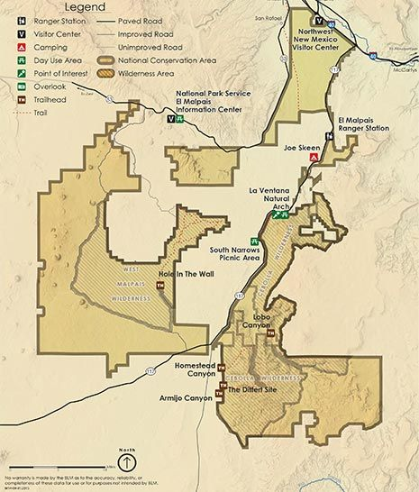
Map from BLM site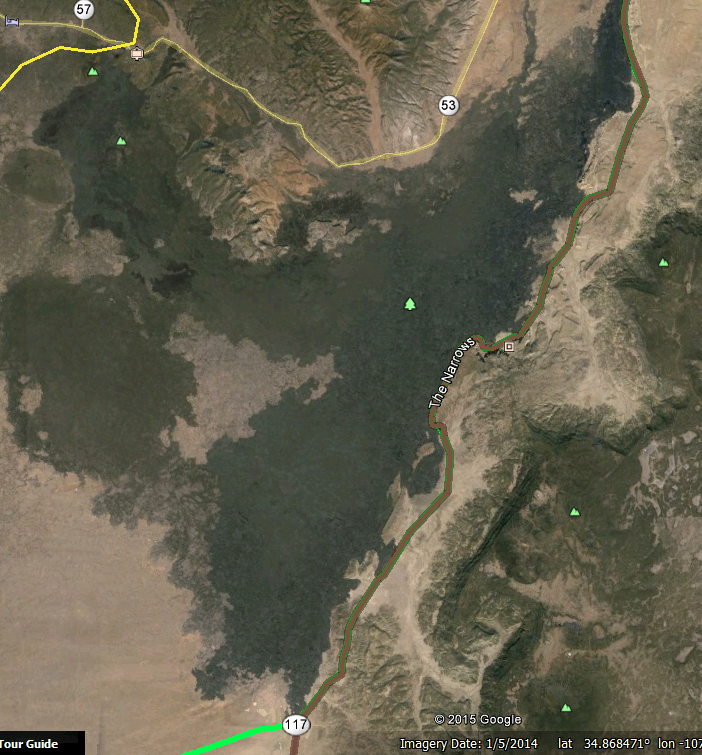
This map from Google Earth shows the road with the lava on the west side.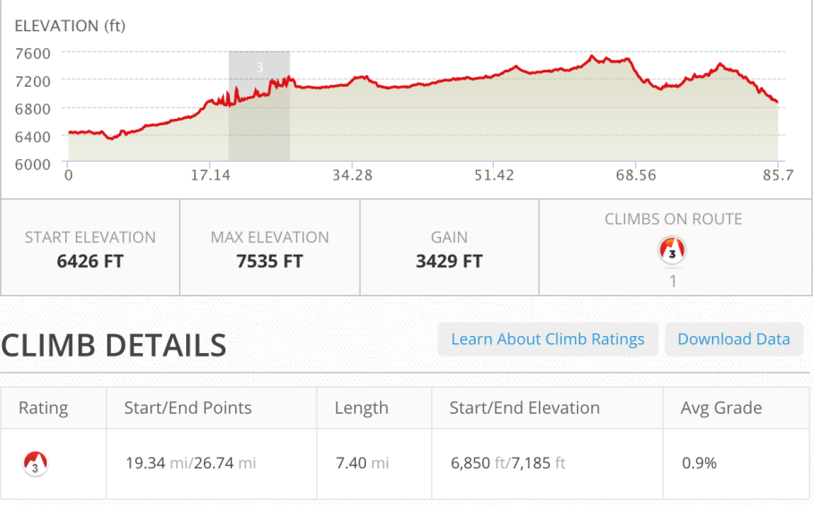
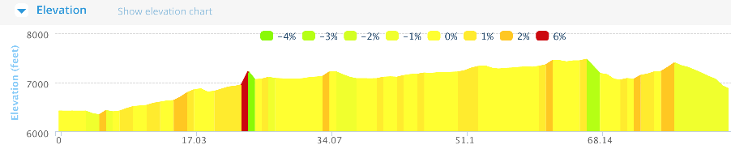
El Malpais - National Conservation Area
 Stone formations all around.
Stone formations all around.
 This was a mostly straight stretch which I stiched into 1 picture.
This was a mostly straight stretch which I stiched into 1 picture.
La Ventana Natural Arch
 From the pull out area
From the pull out area
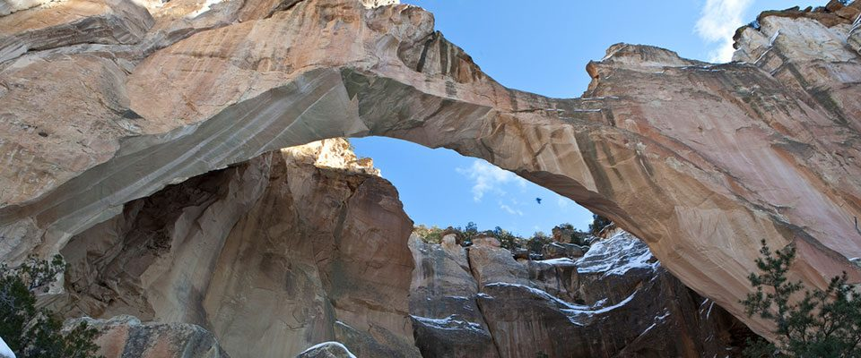
Picture from BLM siteStopped off at the viewing area and hiked a bit of the way in.
Rolling on toward Quamado
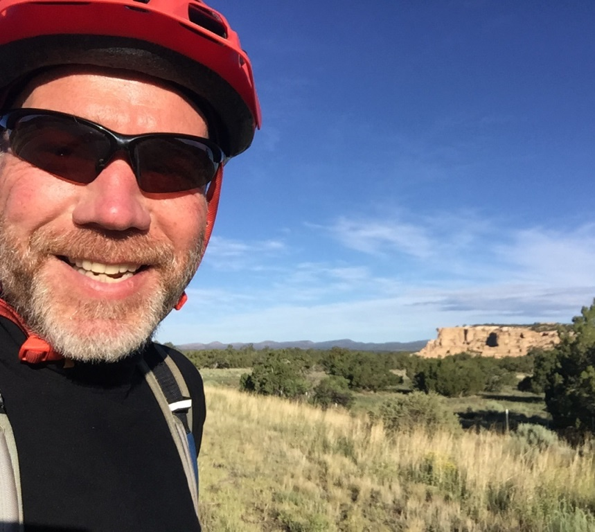
Really a beautiful dayAt the end of the Malpais National Monument the TD route turned south toward Pie Town and I continued on NM 117 toward Quamado. I still had 50 miles to go.
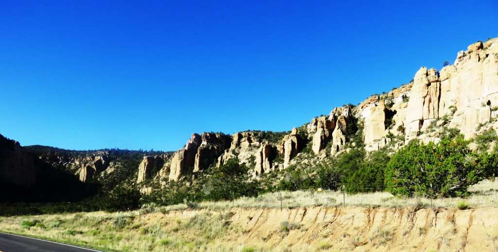
You couldn't really see where these sections would end because you had walls like this on both sides.27 Miles
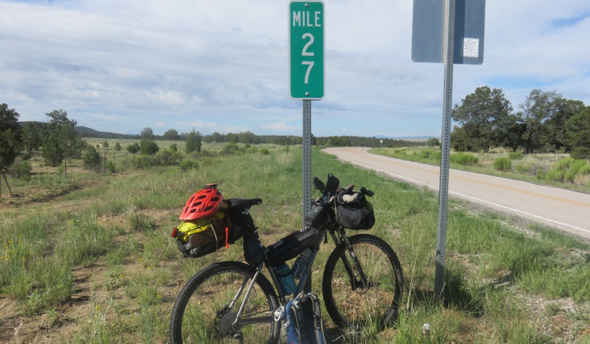
27 miles to the end of the Malpais byway.The mile post "27" was always a good one to see. It meant I had either just covered 27 miles or I had 27 miles to the end of a road which was the case on this day. 27 miles was the distance from my office in Manhattan and my home in Ridgewood. I had started occasionally riding to work a few days a week a few years ago and increased my frequency when I decided to do the Tour Divide.
During the TD I would always get a mental boost when I would get to the "27 miles to go" part of my day because I could visualize the distance and convince myself that "all" I had to do was ride home from work.
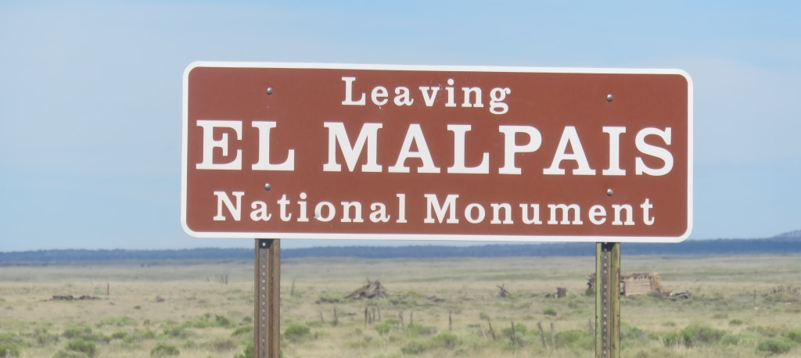
Flat ground where the lava was able to spread out. The last visible lava on the southern edge of the park
The last visible lava on the southern edge of the park
The next 27 miles was a rolling section going south west. There were no big hills to go over just a gradual uphill where each successive hill is a bit higher than the last.
On to Quemado
The final section south from Malpais to Quemado was my first riding experience with the wind switch. I had planned my day to try and get to Quemado by 2pm to avoid the afternoon wind. Unfortunately the wind started about 11:45am. I was still 20 miles from town and it appeared that someone had turned on a fan and started blowing it in my face. The last seven miles were downhill so this balanced out the wind and I was able to complete my day by 2pm.
Quemado, NM turned out to be 5 blocks long and 3 blocks wide. On the main street it had more closed buildings than open. I was glad it had an nice convenience store with Wifi and what appeared to be a reasonably new motel.
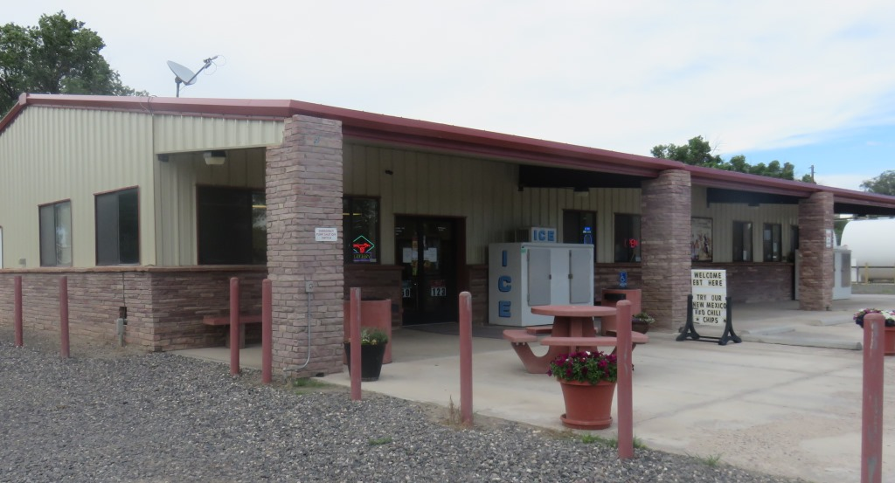
Gas station/convenience store, Quemado, NM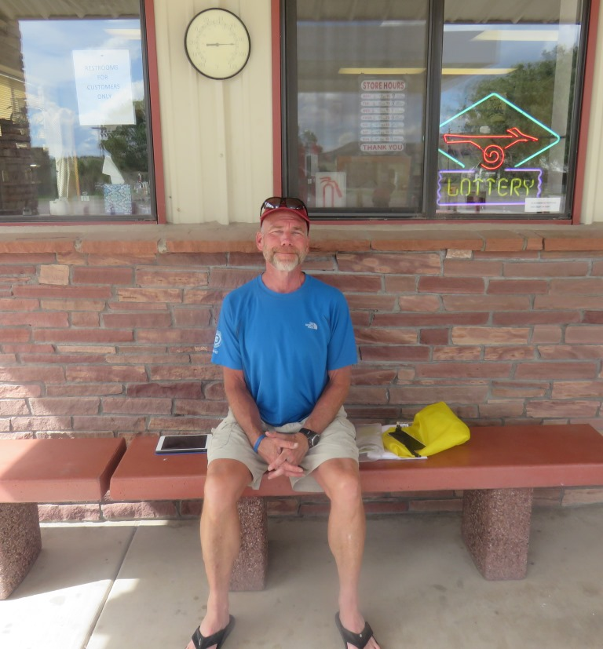
Happy to be under cover for the afternoon.I spent most of the day at the gas station / convenience store which had Wifi and also fruit and food.
The Largo Cafe and Motel had absolutely the grumpiest employees I experienced on my ride. The hotel had no Wifi because "the owner took the box". It had a laundry room but "owner doesn't allow people to use it"
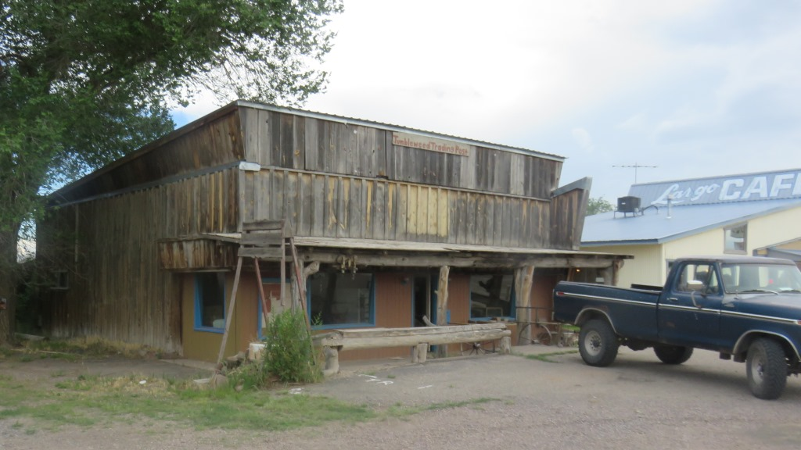
The Tumbleweed Trading Post had seen better days.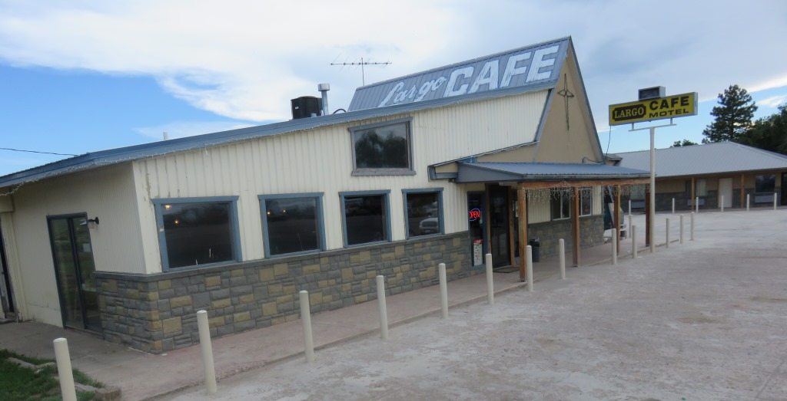
The Largo was the last motel standing among about 5.After returning from the gas station when I went into my room I found a garden snake slithering across and ultimately under my bed. The staff came in with shovels and brooms and eventually evicted the snake. I got the room next store and ordered take out from the cafe.
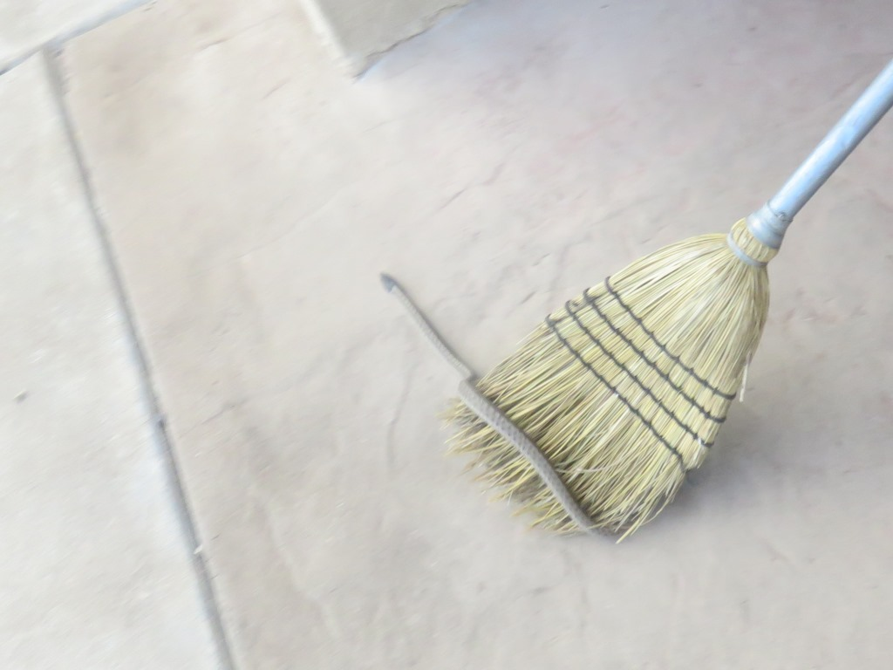
Snake moving onSundown over Quamado

July 11 - 85 miles - Grants to Quamato, NM
See full screen map To go places and do things that I've never done before– that’s what living is all about.Text by Jim O'Brien . Photographs by Jim O'BrienTD on Flickr.